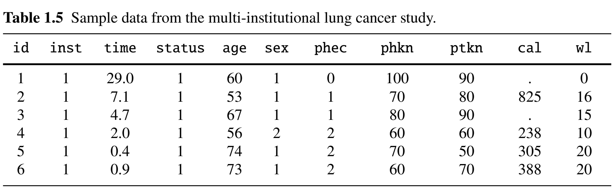
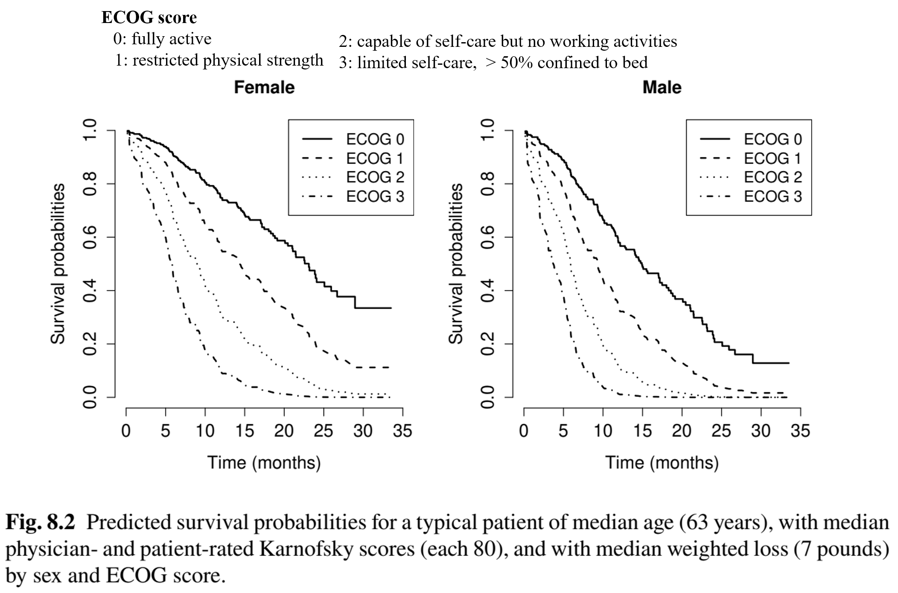
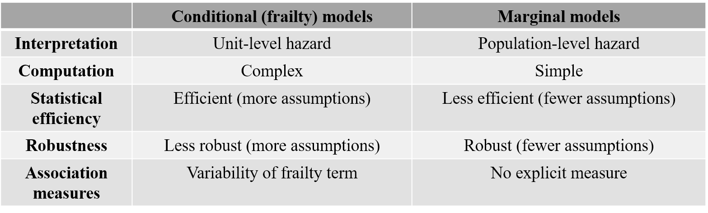
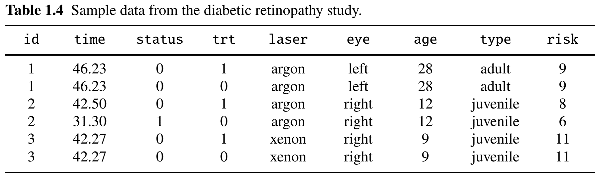
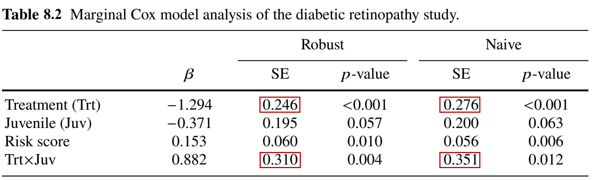
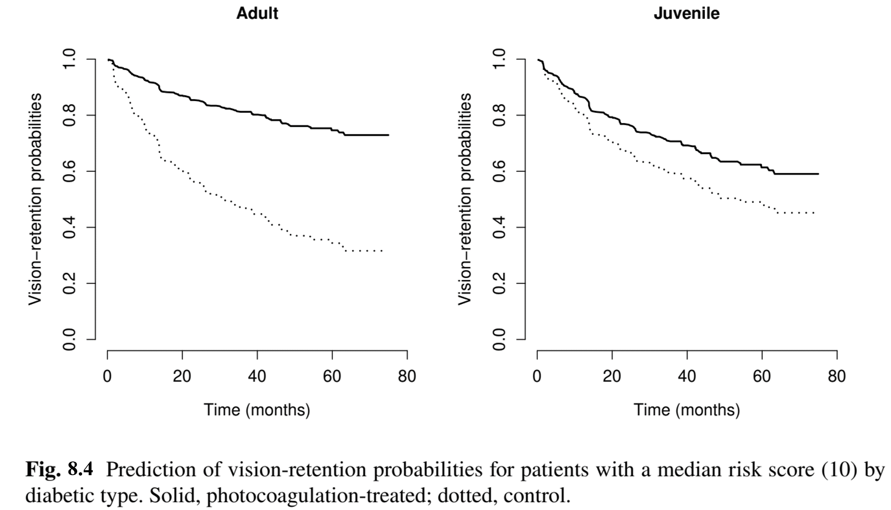

Chapter 8 - Multivariate Failure Times
Department of Biostatistics & Medical Informatics
University of Wisconsin-Madison
Introduction to frailty models
Multivariate Cox model with shared frailty
Example: A multi-center lung cancer study
Marginal models and robust inference
Example: the diabetic retinopathy study
\[\newcommand{\d}{{\rm d}}\] \[\newcommand{\T}{{\rm T}}\] \[\newcommand{\dd}{{\rm d}}\] \[\newcommand{\pr}{{\rm pr}}\] \[\newcommand{\var}{{\rm var}}\] \[\newcommand{\se}{{\rm se}}\] \[\newcommand{\indep}{\perp \!\!\! \perp}\] \[\newcommand{\Pn}{n^{-1}\sum_{i=1}^n}\]
Marginal component-wise distribution
Copula: Joint distribution in terms of component marginals
Clayton copula
Gumbel-Hougaard copula
\(T_1,\ldots, T_K\) mutually independent given \(Z\) and \(\xi\)
Conditional component-wise model \[\begin{align}\label{eq:multi:ph_cond} \lambda_k(t\mid Z, \xi)&= \xi\exp(\beta_k^\T Z) \eta_{k0}'(t)\\ \pr(T_k>t\mid Z,\xi)&=\exp\left\{-\xi\exp(\beta_k^\T Z) \eta_{k0}(t)\right\} \end{align}\]
Conditional joint survival \[\begin{equation}\label{eq:multi:fr_surv_reg} \pr(T_1>t_1,\ldots,T_K>t_K\mid Z,\xi)=\exp\left\{-\xi\sum_{k=1}^K\exp(\beta_k^\T Z) \eta_{k0}(t_k)\right\} \end{equation}\]
Same failure clustered in group \[\begin{align} \beta_1&=\cdots=\beta_K=:\beta\\ \eta_{10}(\cdot)&=\cdots=\eta_{K0}(\cdot)=:\eta_0(\cdot) \end{align}\]
Different failure types \[\begin{align} &\mbox{Different }\beta_k\\ &\mbox{Different }\eta_{k0}(\cdot) \end{align}\]
survival::coxph() (I)idenum in unit id with same covariate effectsurvival::coxph() (II)enum in unit id with different covariate effects
Gamma frailty for correlation within institution
# Fit a Cox model with institution-specific frailty
# to account for correlation within institution
obj <- coxph(Surv(time, status) ~ age + factor(sex) + phec + phkn +
ptkn + wl + frailty(inst, distribution ="gamma"), data = data)
summary(obj)
# exp(coef) exp(-coef) lower .95 upper .95
# age 1.0133 0.9869 0.9938 1.0331
# factor(sex)2 0.5333 1.8751 0.3751 0.7582
# phec 1.9984 0.5004 1.3460 2.9669
# phkn 1.0204 0.9800 1.0002 1.0410
# ptkn 0.9855 1.0147 0.9715 0.9998
# wl 0.9870 1.0132 0.9735 1.0006
Exercise: Breslow estimator
Construct proper Breslow estimators for the baseline function(s) given \(\hat\beta\) under:

survival::coxph() (I)idenum in unit id with same covariate effect
survival::coxph() (II)enum in unit id with different covariate effects
Marginal Cox model to handle correlation between eyes
# Fit a bivariate marginal Cox model with treatment, diabetic type
# risk score, and treatment*type interaction as covariates
obj <- coxph(Surv(time, status) ~ trt + type + trt * type + risk
+ cluster(id), data = data)
summary(obj)
# coef exp(coef) se(coef) robust se z Pr(>|z|)
# trt -1.29375 0.27424 0.27552 0.24614 -5.256 1.47e-07 ***
# typejuvenile -0.37115 0.68994 0.19958 0.19535 -1.900 0.05745 .
# risk 0.15342 1.16582 0.05636 0.05981 2.565 0.01031 *
# trt:typejuvenile 0.88241 2.41672 0.35124 0.30962 2.850 0.00437 ** 
| Diabetic type | Hazard ratio |
|---|---|
| Adult | \[ \exp(-1.294) = 27.4\% \] |
| Juvenile | \[ \exp(-1.294 + 0.882)= 66.2\% \] |

| Multivariate events | Longitudinal data |
|---|---|
| Shared-frailty models | Mixed-effects models |
| Marginal models | Marginal models (GEE) |
coxph(Surv(time, status) ~ covariates + frailty(id, distribution = "gamma"))coxph(Surv(time, status) ~ covariates + cluster(id))